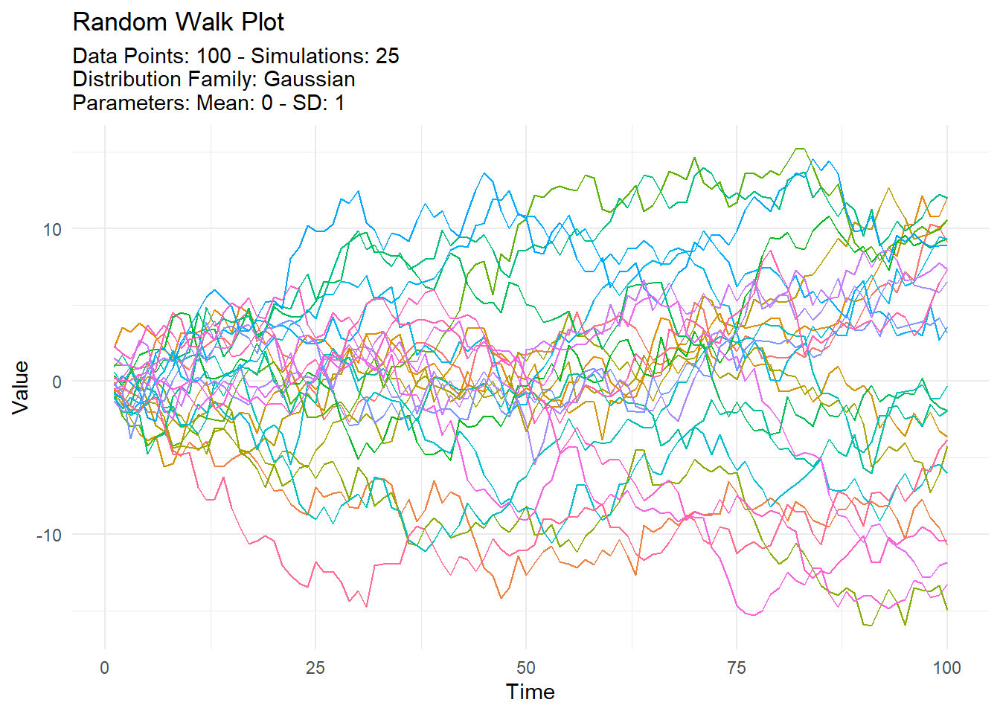
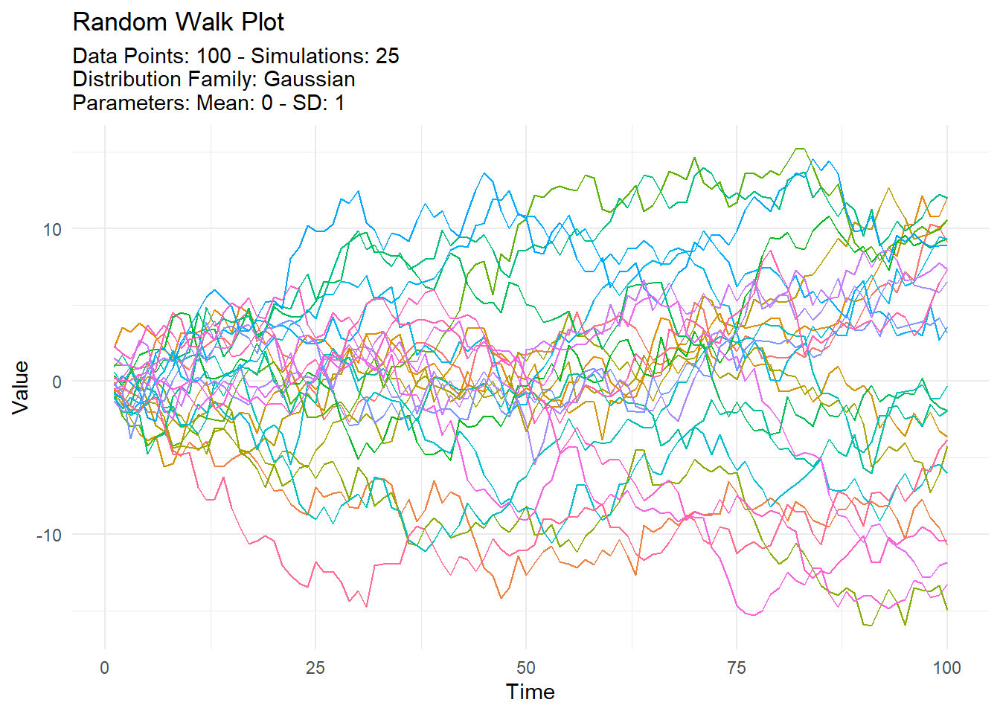
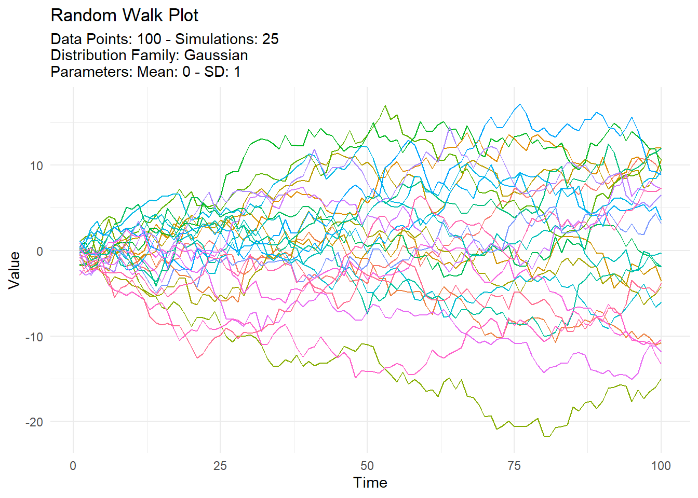
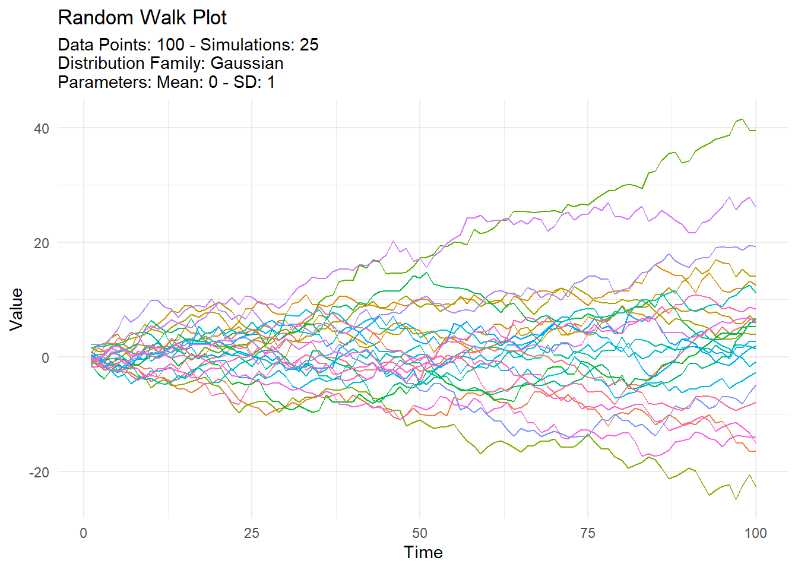
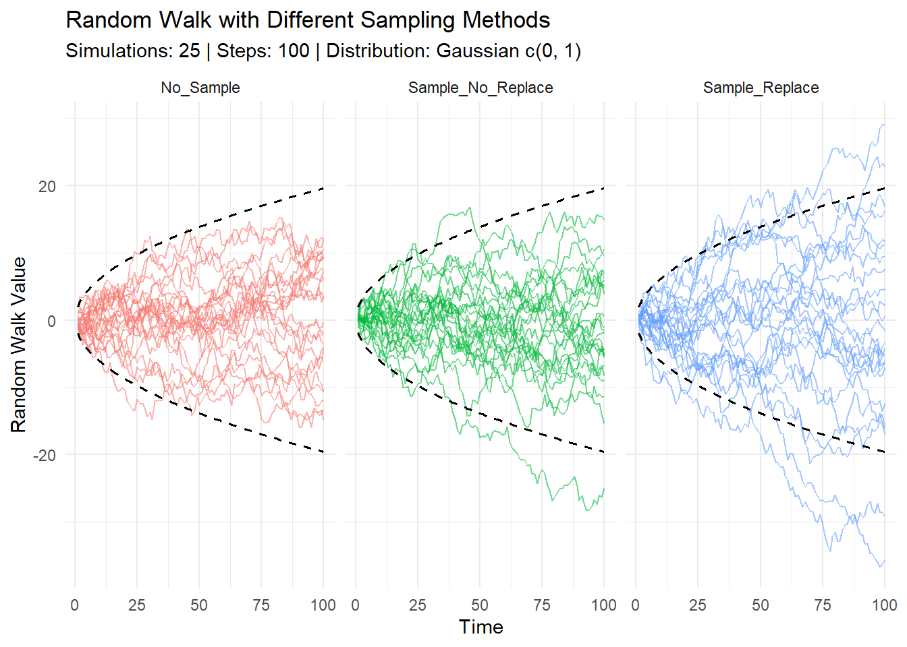

library(TidyDensity)
set.seed(123)
tidy_normal(.num_sims = 25, .n = 100) |>
tidy_random_walk(.value_type = "cum_sum") |>
tidy_random_walk_autoplot()
Steven P. Sanderson II, MPH
July 11, 2024
Welcome back, data enthusiasts! Today, we’re diving into the fascinating world of random walks using the TidyDensity R package. If you’re working with time series data, financial modeling, or stochastic processes, understanding random walks is essential. And with TidyDensity, implementing and visualizing these walks has never been easier.
A random walk is a mathematical object that describes a path consisting of a succession of random steps. It’s a cornerstone concept in fields like physics, economics, and biology. In finance, for example, the random walk hypothesis suggests that stock market prices evolve according to a random walk and thus cannot be predicted.
tidy_random_walk() FunctionTidyDensity simplifies the generation and manipulation of random walks with its intuitive tidy_random_walk() function. This function can be used in conjunction with any tidy_ distribution function, allowing for flexible and powerful random walk simulations.
tidy_random_walk(
.data,
.initial_value = 0,
.sample = FALSE,
.replace = FALSE,
.value_type = "cum_prod"
).data: The dataset from a tidy_ distribution function. This forms the basis of your random walk..initial_value: The starting value of the random walk. The default is 0, but you can set it to any numeric value..sample: A boolean indicating whether to sample the y values from the tidy_ distribution. Defaults to FALSE..replace: If both .sample and .replace are TRUE, sampling is done with replacement. Defaults to FALSE..value_type: Determines how the walk is computed. Options are:"cum_prod": Computes the cumulative product of y."cum_sum": Computes the cumulative sum of y.Let’s see tidy_random_walk() in action with some practical examples.
First, let’s create a simple random walk using a normal distribution and compute the cumulative sum.
library(TidyDensity)
set.seed(123)
tidy_normal(.num_sims = 25, .n = 100) |>
tidy_random_walk(.value_type = "cum_sum") |>
tidy_random_walk_autoplot()
In this example, we generate 25 simulations of 100 points each from a normal distribution. The tidy_random_walk() function then computes the cumulative sum of these points, simulating a simple random walk. The tidy_random_walk_autoplot() function is used to visualize the random walk.
Next, we’ll explore a random walk where values are sampled.
set.seed(123)
tidy_normal(.num_sims = 25, .n = 100) |>
tidy_random_walk(.value_type = "cum_sum", .sample = TRUE) |>
tidy_random_walk_autoplot()
Here, setting .sample to TRUE ensures that each step in the random walk is taken by randomly sampling from the original dataset. This can introduce additional variability and randomness to the walk.
Finally, let’s create a random walk with sampling and replacement.
set.seed(123)
tidy_normal(.num_sims = 25, .n = 100) |>
tidy_random_walk(
.value_type = "cum_sum",
.sample = TRUE,
.replace = TRUE
) |>
tidy_random_walk_autoplot()
In this example, setting both .sample and .replace to TRUE ensures that values are sampled with replacement. This can be useful in bootstrapping scenarios or when simulating more complex stochastic processes.
To wrap up, let’s combine multiple random walks and visualize them using ggplot2. This bonus section will show you how different sampling methods impact the random walks.
library(ggplot2)
library(dplyr)
set.seed(123)
df <- rbind(
tidy_normal(.num_sims = 25, .n = 100) |>
tidy_random_walk(.value_type = "cum_sum") |>
mutate(type = "No_Sample"),
tidy_normal(.num_sims = 25, .n = 100) |>
tidy_random_walk(.value_type = "cum_sum", .sample = TRUE) |>
mutate(type = "Sample_No_Replace"),
tidy_normal(.num_sims = 25, .n = 100) |>
tidy_random_walk(.value_type = "cum_sum", .sample = TRUE, .replace = TRUE) |>
mutate(type = "Sample_Replace")
) |>
select(sim_number, x, random_walk_value, type) |>
mutate(
low_ci = -1.96 * sqrt(x),
hi_ci = 1.96 * sqrt(x)
)
atb <- attributes(df)
df |>
ggplot(aes(
x = x,
y = random_walk_value,
group = sim_number,
color = factor(type))
) +
geom_line(aes(alpha = 0.382)) +
geom_line(aes(y = low_ci, group = sim_number),
linetype = "dashed", size = 0.6, color = "black") +
geom_line(aes(y = hi_ci, group = sim_number),
linetype = "dashed", size = 0.6, color = "black") +
theme_minimal() +
theme(legend.position="none") +
facet_wrap(~type) +
labs(
x = "Time",
y = "Random Walk Value",
title = "Random Walk with Different Sampling Methods",
subtitle = paste0("Simulations: ", atb$all$.num_sims,
" | Steps: ", atb$all$.n,
" | Distribution: ", atb$all$dist_with_params
)
)
Each set consists of 25 simulations of 100 steps.
Combining Data: The results are combined into a single data frame, with a new column type to indicate the sampling method used.
Calculating Confidence Intervals: We calculate the 95% confidence intervals for each step.
Plotting: Using ggplot2, we plot the random walks, coloring by sampling method and adding dashed lines to indicate the confidence intervals. We also facet the plot by type to separate the different sampling methods visually.
Random walks are a powerful tool for modeling and understanding various phenomena. With TidyDensity and the tidy_random_walk() function, you can easily generate and visualize these processes in R. Whether you’re conducting financial analysis, simulating biological processes, or exploring theoretical concepts, TidyDensity offers a flexible and user-friendly approach.
Stay tuned for more tutorials and deep dives into the capabilities of TidyDensity. Happy coding!
Feel free to try out these examples and explore the versatility of tidy_random_walk(). Share your insights and results with us in the comments below or on social media using #TidyDensity. Until next time, keep experimenting and learning!